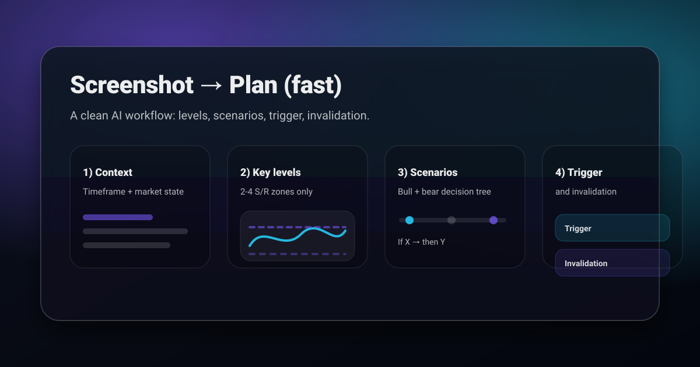
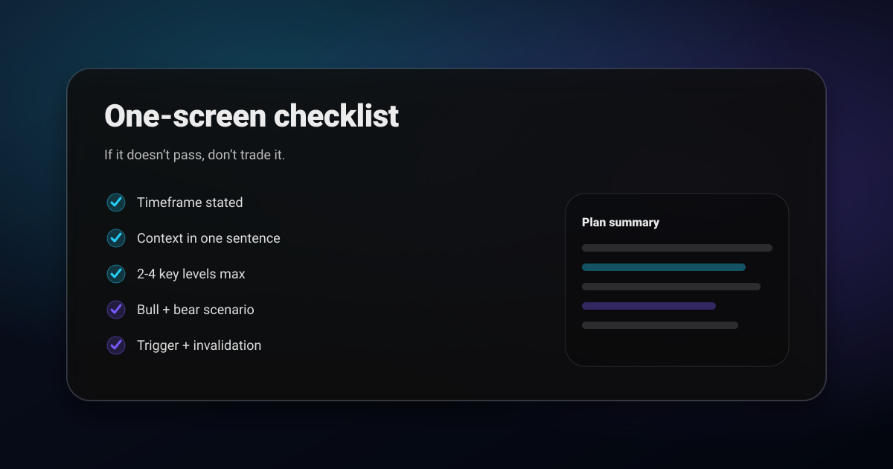

AI chart analysis is using AI to turn a screenshot into a structured plan (levels → scenarios → trigger → invalidation). It’s about clarity, not prediction.
- Take a clean screenshot (timeframe + context visible).
- Extract 2 to 4 key levels that would change a decision.
- Force two scenarios (bull/bear) so you reduce bias.
- Require a trigger + invalidation before risking.
If you want more wins, you usually don’t need a “secret strategy.” You need structure.
Reality check: no strategy guarantees profit, this is how you stack odds and reduce bad trades.
What AI should do (and what it should not)
Use AI to structure your thinking and reduce friction. Don’t use it to “predict.”
- Do: extract levels, summarize context, propose scenarios, and force invalidation.
- Don’t: outsource your risk, position sizing, or decision-making.
Before you analyze: take a better screenshot
Your AI output is only as good as the chart you feed it. A good screenshot includes:
- Timeframe label (5m / 1h / 4h / 1D) and enough candles for context
- Price scale (so levels can be stated clearly)
- Recent swing high/low and at least one clear reaction area
- Session markers (optional): London/NY, or major event candles
Step 1: State context in one sentence (timeframe + market state)
Start every analysis with a single line:
- “On the 1H, price is ranging below resistance after a strong impulse.”
If you can’t describe the context, you’re not ready to plan entries.
Step 2: Pull 2 to 4 key levels (support/resistance that actually matter)
Ask the AI to find the few levels you’d be willing to trade from. Good levels are typically:
- prior day/week high or low
- range boundaries (top/bottom of the box)
- clean reaction zones (multiple taps)
- break/retest areas (structure flips)
The rule: if it wouldn’t change your decision, it’s not a key level.
Step 3: Force two scenarios (bull + bear)
This is the fastest way to stop “bias wars.” You want two simple if/then paths:
- Bull case: if price does X at level Y, then look for continuation to Z.
- Bear case: if price does A at level B, then look for continuation to C.
Scenarios beat predictions because they keep you objective.
Step 4: Add a trigger and an invalidation (the non-negotiables)
Most “analysis” fails because it never becomes executable. Fix that by requiring:
- Trigger: what you must see before taking risk (break + close, sweep + reclaim, retest hold, etc.).
- Invalidation: the one level that proves the setup wrong.
If an AI can’t give you a clean invalidation level, the setup is probably fuzzy.
Which timeframe should you screenshot?
Screenshot the timeframe you actually trade, plus the one above it. Two images, not six. The higher timeframe decides whether you are with the trend or against it, and the lower one gives you the trigger.
- Scalping: 5m for the trigger, 1h for the direction.
- Intraday: 15m or 1h for the trigger, 4h for the direction.
- Swing: 4h for the trigger, daily for the direction.
If the two disagree, that is information, not a problem. A long setup on the 15m under daily resistance is a smaller trade with a tighter target, and knowing that before you enter is most of the value.
A worked example, start to finish
Take a 1 hour chart that has run up into an area it was rejected from twice before. Run the four steps and you get something you could hand to someone else:
- Context: uptrend on the 4h, but price is now into 1h resistance that has held twice.
- Levels: the resistance band above, the prior swing low beneath, and the mid of the last impulse.
- Bull case: a close above the band and a hold on the retest opens continuation toward the prior high.
- Bear case: a third rejection with a close back under the mid opens the move to the swing low.
- Trigger: the retest hold, or the reclaim of the mid. Not the first touch of either.
- Invalidation: for the bull case, a close back under the band. For the bear case, acceptance above it.
Six lines. Every one of them is checkable tomorrow, which is the entire difference between analysis and opinion.
How to check whether the output is any good
You do not need to trust the tool. You need to test it, and the test costs nothing because it uses charts that have already happened.
- Crop the right hand side of a chart from last month and run it.
- Write down the levels and the invalidation it gives you.
- Uncover the rest and see which level actually mattered.
- Repeat five times. You are not looking for it to be right, you are looking for it to be consistent and specific.
A tool that names the level price actually reacted at, even when it called the direction wrong, is doing its job. A tool that was directionally right with vague levels was lucky, and luck does not repeat.
What the AI cannot see
A screenshot is a picture of price and time. Everything outside that frame is invisible, and pretending otherwise is how people get hurt.
- Scheduled news. A chart twenty minutes before a rate decision looks like any other chart.
- Order flow and depth. Not in the image, not inferable from it.
- Your account. It cannot size a position it knows nothing about. That stays with you and a position sizing calculator.
- Your other positions. Three correlated longs is one trade, and only you can see that.
Adjusting the workflow per market
The four steps do not change. The risk arithmetic around them does, and that is where most people apply a crypto stop to a stock or a forex size to gold.
- Crypto: wider wicks and thinner weekend liquidity. Same levels, more room behind the stop, smaller size. See break and retest for crypto.
- Forex: the same level behaves differently per session. A London break and an Asian session break are not the same event.
- Stocks: the overnight gap is a risk your intraday invalidation cannot protect against.
- Metals: prone to sweeps around news, so the trigger matters more than the level. See gold and silver trading.
A prompt you can reuse (copy/paste)
This prompt tends to produce structured, tradable outputs:
Analyze this chart screenshot. Keep it short and actionable.
1) Timeframe: [fill in]
2) Context: trend/range + where price sits vs key levels
3) Identify 2 to 4 key levels (support/resistance) and why each matters
4) Give 2 scenarios:
- Bull: trigger + invalidation + target area
- Bear: trigger + invalidation + target area
5) End with a 5-line plan summary.
Common mistakes (quick fixes)
- Too many levels: cap it at 2 to 4. More lines usually means less clarity.
- No trigger: “looks bullish” isn’t a trigger.
- No invalidation: if you can’t define “I’m wrong,” you can’t manage risk.
- Wrong timeframe: plan on the timeframe you’ll execute, not the one that feels comforting.
- Long paragraphs: demand a compact summary that you can actually follow.
FAQ
Is AI chart analysis financial advice? No. Use it for structure, not certainty. Manage risk yourself.
What charts work best? Clean screenshots with a visible timeframe label and price scale, plus enough candles to show context.
Does it work across markets? Yes. The workflow is market-agnostic.
Related posts
- Best AI Chart Analyzer 2026: What to Look For
- Trading Plan Template You Can Copy
- Support and Resistance Trading
- Market Structure: BOS vs CHoCH Explained
- Risk Management and Position Sizing
Try it on your next screenshot
ChartsGPT is built for this exact flow: screenshot → key levels → scenarios → plan. Start with one chart, one timeframe, and one decision tree.
Related guides in this series
- What an AI trading assistant actually does, and the five things to demand from one.
- Screenshot chart analysis: how to capture a chart so the output is worth reading.
- How to read a trading chart in 4 steps, the manual version of this workflow.
Get ChartsGPT
Turn your screenshot into key levels, scenarios, trigger, and invalidation in seconds.


About ChartsGPT
ChartsGPT is an AI chart analysis app designed to turn screenshots into structured levels and scenarios. For support, contact anthonyvvza@gmail.com.